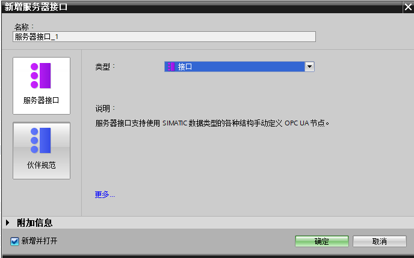
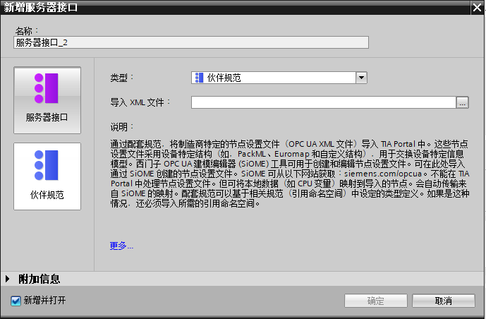
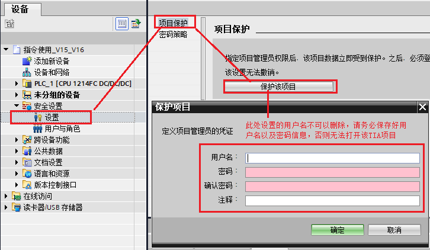
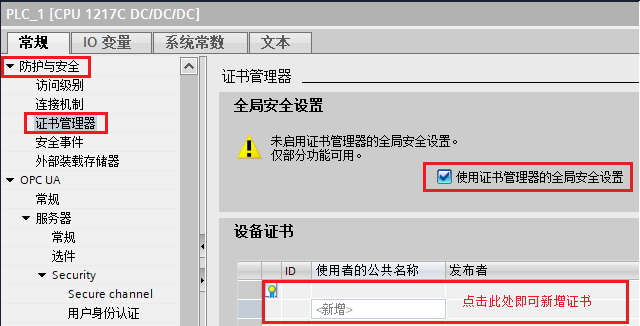
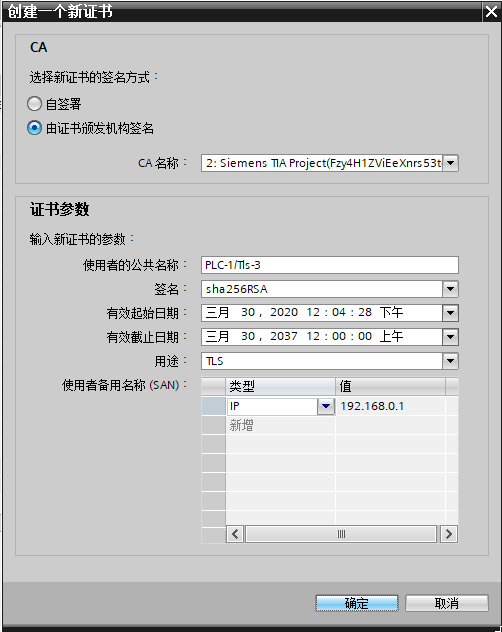
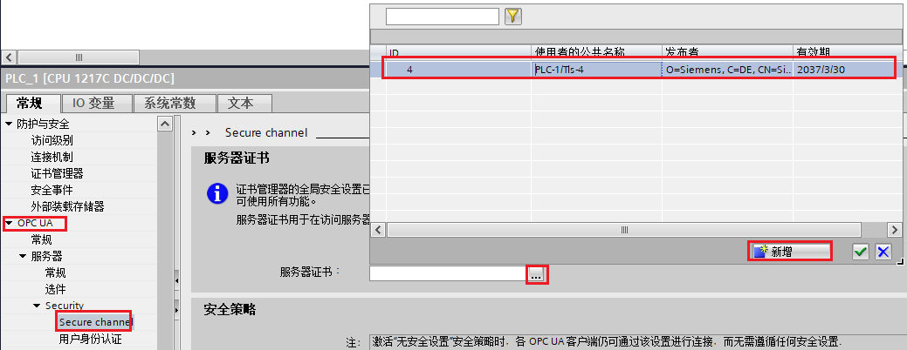
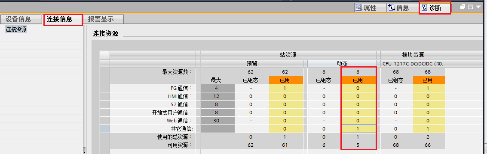
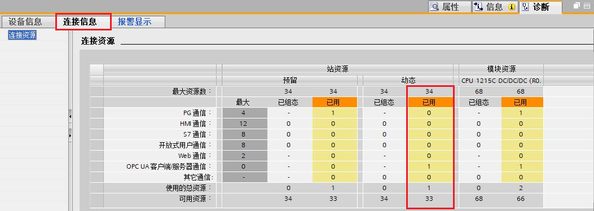
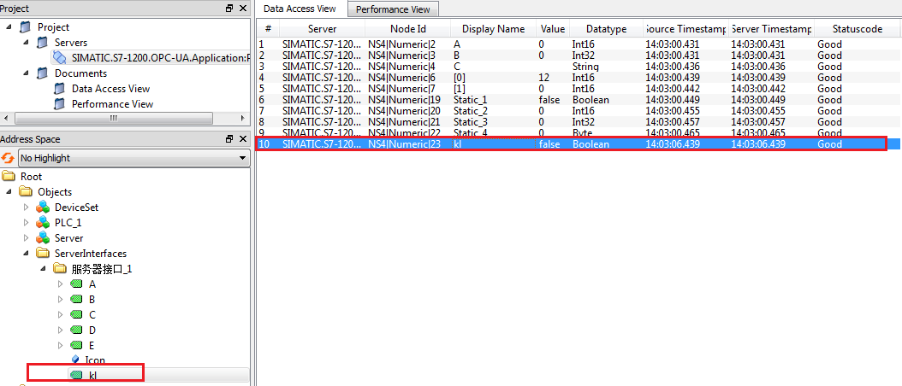

1.什么是服务器接口？
1.什么是服务器接口？
服务器接口将 CPU 的 OPC UA 地址空间的节点合并到一个单元中，以便为 OPC UA 客户端提供该 CPU 的特定视图。每个服务器接口都会在 CPU 的 OPC UA 服务器中定义一个或多个命名空间。
下表是S7-1200支持的服务器接口类型，具体如表1所示。
| 服务器接口类型 | 备注 |
|---|---|
|  |
服务器接口：支持使用SIMATIC数据类型的各种结构手动定义OPC节点。 （最大支持2个服务器接口） 目前，仅介绍基于"服务器接口"的相关设置 |
|  |
伙伴规范：通过配套规范，将制造商特定的节点设置文件（OPC UA XML 文件）导入 TIA Portal 中。这些节点设置文件采用设备特定结构（如，PackML、Euromap 和自定义结构），用于交换设备特定信息模型。 西门子 OPC UA 建模编辑器 (SiOME) 工具可用于创建和编辑节点设置文件。可在此处导入通过 SiOME 创建的节点设置文件。SiOME 可从以下网站获取：siemens.com/opcua。不能在 TIA Portal 中处理节点设置文件。但可将本地数据（如 CPU 变量）映射到导入的节点。 会自动传输来自 SiOME 的映射。 配套规范可以基于相关规范（引用命名空间）中设定的类型定义。如果是这种情况，还必须导入所需的引用命名空间。 该文档内暂不涉及 |
 2.如下图所示，程序编译提示“所选的 OPC UA 许可证不足。要使用 OPC UA，请购买并选择正确数量的许可证”，该如何解决？
2.如下图所示，程序编译提示“所选的 OPC UA 许可证不足。要使用 OPC UA，请购买并选择正确数量的许可证”，该如何解决？
 注意！编译信息中，黄色叹号的编译信息属于警告，但不影响程序下载，但是红色的信息属于错误，必须修改后程序才能正常下载。
注意！编译信息中，黄色叹号的编译信息属于警告，但不影响程序下载，但是红色的信息属于错误，必须修改后程序才能正常下载。
上图中的“许可证不足”的错误是因为没有在CPU 属性 “运行系统许可证”内设置许可证类型。如图2所示。

 3.如何生成CA证书，以及如何导入导出证书？
3.如何生成CA证书，以及如何导入导出证书？
CA证书的生成需要启用证书管理器，并且具有管理员权限，具体步骤：
1). 设置项目保护的用户名以及密码，可在项目树下，安全设置→设置内设置。如图3所示。
2). 步骤1设置成功以后，在“安全设置”下方会自动添加“证书管理器”，可以在该管理器内对证书作相应的管理，例如删除、导入以及导出等，如图4所示。

图4.证书管理器
3). CA证书的创建，需要在PLC属性内，先启用证书管理器的全局安全设置：CPU属性 防护与安全→证书管理器→勾选“使用证书管理器的全局安全设置”然后就可以在下方的“设备证书”处添加证书，如图5所示。

图5.启用证书管理器的全局安全设置
此时用户可以根据自己的需求添加自签署或者是CA证书，如图6所示。

图6.启用证书管理器的全局安全设置
需要注意的是，启用证书管理器时，会提示当前的证书组态会丢失，需要重新确认和对已组态的证书信息，所以推荐在项目初期，就考虑是否需要启用该安全设置，如图7所示。

图7.启用证书管理器的全局安全设置注意事项
4). 证书的创建以后需要在对应的功能里分配证书，S7-1200 OPC UA 服务器的证书分配需要在：CPU属性 OPC UA→Secure channel 内选择已经创建好的证书，当然也可以直接在此处新建，如图8所示。

图8.分配证书
 4.S7-1200 OPC UA 占用什么连接资源？
4.S7-1200 OPC UA 占用什么连接资源？
OPC UA 连接在固件V4.4版本中占用"可用自由连接"中的资源，在固件V4.5版本中占用“OPC UA客户端/服务器通信”中的资源，S7-1200 V4.5支持OPC UA的最大会话数是10个，使用时确保应用程序有足够的可用连接。
查看方式：S7-1200 PLC在线的前提下：在窗口下方的属性对话框侧，选择诊断→连接信息 即可查看，如图9（固件V4.4，显示为“其他通信”），图10（固件V4.5，显示为“OPC UA客户端/服务器通信”）所示。

图9.S7-1200 OPC UA占用的连接资源（固件V4.4）

图10.S7-1200 OPC UA占用的连接资源（固件V4.5）
OPC UA 通信仅支持符号访问，对于非优化的DB块数据，因为其有符号名，同样也可以作为OPC UA的元素添加至“OPC UA 服务器接口中”，从而实现数据访问，如图11所示。

图11.非优化的DB块变量添加至服务器接口
具体连接状态，如图12所示。

图12.非优化的DB块变量连接状态
 6.S7-1200 OPC UA 支持哪些数据类型？
6.S7-1200 OPC UA 支持哪些数据类型？
OPC 基金会定义了一组支持的数据类型，这些数据类型用于描述变量及其变量类型的 Value 属性的结构。S7-1200 V4.5 支持其中一部分数据类型，如表2所示。
表2.S7-1200 OPC UA支持的数据类型| SIMATIC 类型 | OPC UA 类型名称 |
| Bool | Boolean |
| SInt | SByte |
| USInt | Byte |
| Int | Int16 |
| UInt | UInt16 |
| DInt | Int32 |
| UDInt | UInt32 |
| Real | 浮点型 |
| LReal | 双精度浮点型 |
| WString | 字符串 |
| DWord | StatusCode |
| DATE | UInt16 |
| TOD | UInt32 |
| TIME | Int32 |
| DTL | 结构 |
S7-1200 V4.5还支持服务器方法以及结构化数据类型（结构体和数组）。不支持以下项目：联合。
需要注意的是，该表2中表示受支持的基本节点类型，许多SIMATIC数据类型都映射到基本节点类型。映射到基本节点类型的任何 SIMATIC 数据
类型也是受支持的节点类型。